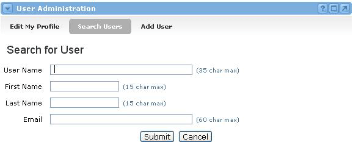

Searching for Groupware Users : Searching for Users
To search for a user who has already been added to the system, follow these steps:
- Locate the User Administration channel and click the Search Users option.
- You will now see the Search for User screen.
- Enter as little or as much information as you know about the user in any or all of the four fields provided (User Name, First Name, Last Name, Email).
- Click the Submit button.
- The system will return all matches for your criteria. If no users are found, click the New Search button, make your search less specific, and try again until you get a satisfactory result.
